About AZ Fish Tracker
Arizona Fish Tracker is dedicated to offering anglers a simple and effective way to check out important information on fish you plan to target, the weather in lakes you plan to fish, and to track your fishing records for every species. Check out the current Arizona Records for all the species in AZ below, as well as the weather forecast for the major lakes in AZ. Sign up will be available soon so you can track your own records. Leave your name and email at the bottom to be contacted when we have everything up and running. Thanks for checking us out anglers!
Fish Species in AZ
Rainbow
Rainbow trout are a wonderful looking fish, and are caught on many types of baits and lures. They are often considered to be the hardest fighting trout, and are stocked in plenty of lakes and rivers in Arizona.
AZ Record: 32.5 in. 15 lb. 9.12 oz. - Willow Springs lake
Brown
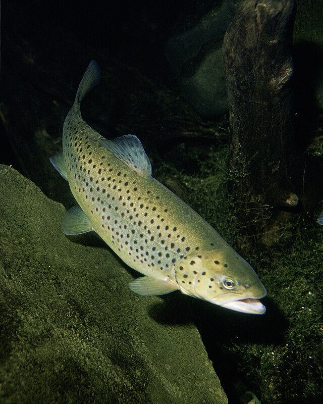The Brown trout are stocked in Arizona and are found in just about any type of body of water.
AZ Record: 36.0 in. 22 lb. 14.5 oz. - Reservation lake
Apache
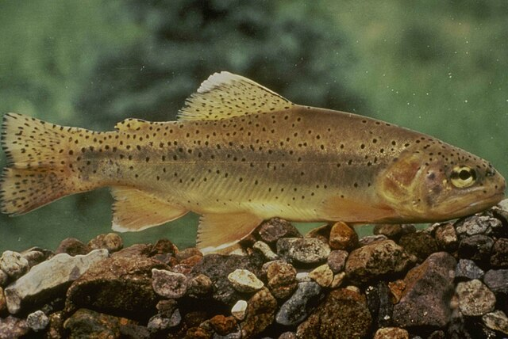Apache trout are 1 of 2 trout species native to Arizona. They are found in the mountains of Arizona, and have a beautiful goal/tan body with black spots.
AZ Record: 24.0 in. 5 lb. 15.5 oz. - Hurricane lake
Cutthroat
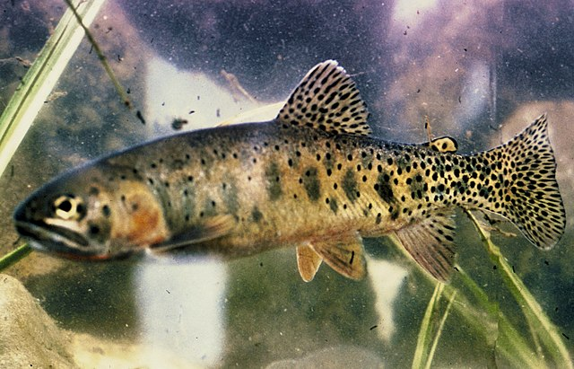Cutthroat trout are found in Northeastern Arizona for the most part and prefer areas similar to Rainbow trout.
AZ Record: Unavailable
Brook
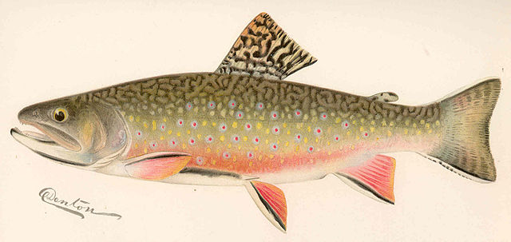The brook trout inhabits large and small lakes, rivers, streams, creeks, and spring ponds in cold temperate climates with mild precipitation.
AZ Record: 20.5 in. 4 lb. 15.2 oz. - Sunrise lake
Gila
Gila trout are 1 of two species native two Arizona. They can be found in small mountain water streams, and in confined pools. The Gila trout has been threatened by competition and hybridization with introduced game fish such as the rainbow trout. They are now endangered.
AZ Record: 5 lb. 1.92 oz - Goldwater lake
Tiger
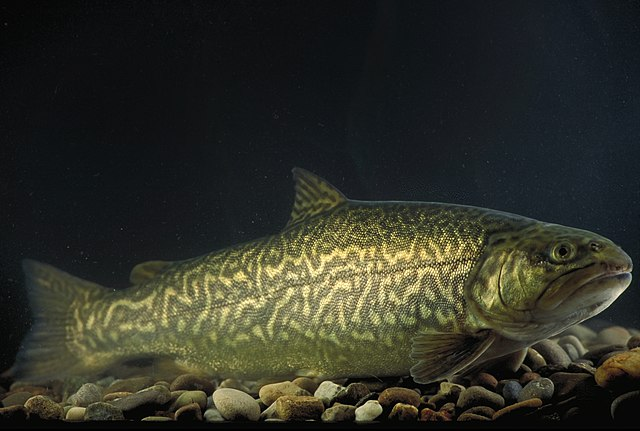They are rarely found in the wild, as the parent species are somewhat unrelated genetically.
AZ Record: 18.75 in. 3 lb. 16 oz - Morton tank
Channel
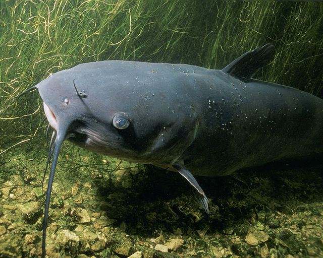The channel Catfish are the most common amongst North America and Arizona. They have small teeth and swallow food hole, focusing on bottom feeding as most catfish do. They have extremely good senses of smell and taste, and are targeted by common ways of cat-fishing. Use some stinky bait!
AZ Record: 39.5 in. 35 lbs 4 oz - Upper Lake Mary
Flathead
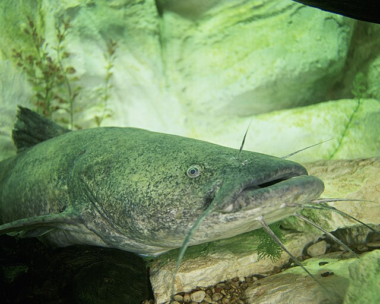The flathead is less common than the channel catfish, but they can get Much bigger. The difference is a darker color and flat head and their preference for live bait. The big flatheads are caught with live carp that weigh multiple pounds.
AZ Record: 53.5 in. 76 lb. 8.64 oz. - Bartlett lake
Yellow Bullhead
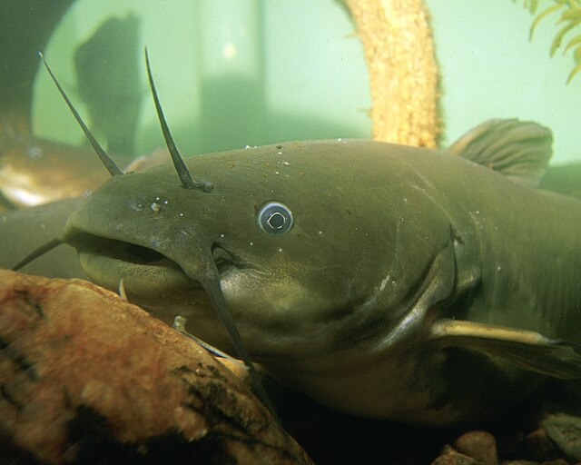The yellow bullhead catfish are a small species of bullhead catfish that feed on most anything. they are foudn in shallow, often murky water of lakes, rivers, ponds, etc.
AZ Record: 17.75 in. 4 lb. 8.1 oz. - Mormon lake
Largemouth
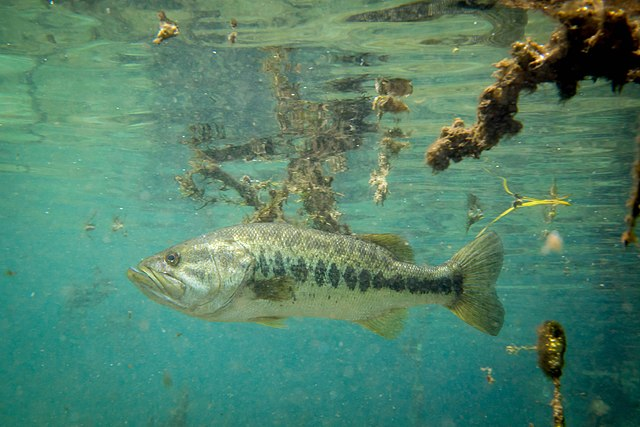The largemouth bass has an overly large mouth, hence the name. They are common to find among many AZ lakes and are commonly caught live bait, lures, jigs, and just about anything that looks tasty to a fish! They are known to be good fighter, voracious eater, and often go airborne when hooked.
AZ Record: 28.0in 16 lbs. 7.68 oz - Canyon lake
Smallmouth

The smallmouth bass is almost identical to the largemouth aside from it's more average sized mouth. They are powerful swimmers making them an anglers favorite to fish. It is also found among many lakes and streams in Arizona, but they tend to like cooler waters than the Largemouth.
AZ Record: 22.75 in. 7 lb. 0.96 oz. - Roosevelt lake
Striped
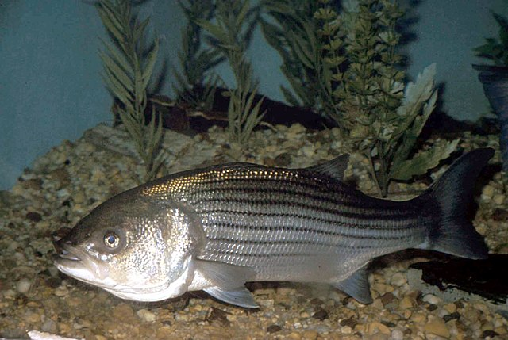The striped bass is not stocked by Game and Fish in Arizona, and decimate local populations of bait fish. They have stripes along their bodya nd are known to be a fun fish to catch.
AZ Record: 45.25 in. 29lb. 13.76oz. - Lake Pleasant
Yellow
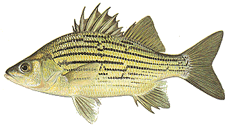Attribution: Iowa Department of Natural Resources, Attribution, via Wikimedia Commons
The yellow bass is far less common type of bass, and are much smaller than other bass. They prefer dense vegetation and low turbidity.They are often caught using crappie jigs and minnows, but aren't often targeted by anglers.
AZ Record:14.25 in. 2lb 2.56 oz. - Canyon lake
White
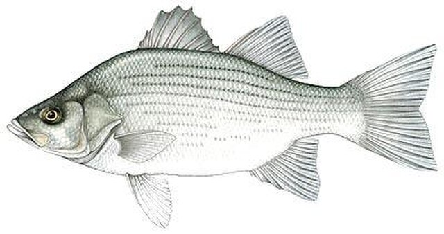The white bass are found mostly in upstream segments of rivers, and don't get very large. They are also less common to find in Arizona.
AZ Record: 19.5 in. 4 lb. 11.7 oz. - Lake Pleasant
White
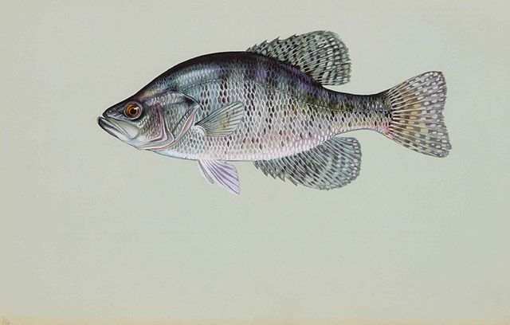The crappie has 5-10 black bars that line its body rather than spots like the black crappie. The White Crappie rarely exceeds 2 pounds, and has a large mouth with extremely thin lips, making fishing more challenging unless using properly sized hooks and equipment. WHite crappie are more resistant to turbulence than Black Crappie so can be found in more disturbed water.
AZ Record: 16.75 in, 3 lb. 5.28 oz. - Lake Pleasant
Black
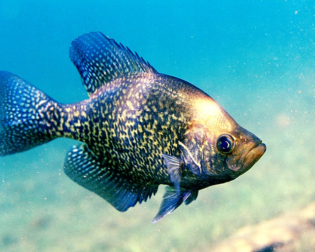The black Crappie differs from the White crappie really only in the coloration, as the Black Crappie has SPots, and a darker body. They also have the thin lips, and require ease in angling in order to hook them. They are usually only 4-8 inches long. Black crappie prefer cal water in contrast to the WHite Crappie.
AZ Record: 4 lb. 10.0 oz. - San Carlos Lake
Blue Gill
Artic Grayling
Bigmouth Bufallo
Desert Sucker
Green Sunfish
Northern Pike
Redear Sunfish
Roundtail Chub
Sonora Chub
Nile tilapia
Walleye
Yellow Perch
"Some content on this page includes descriptions of various fish species sourced from Wikipedia articles. All content is licensed under the Creative Commons Attribution-ShareAlike 4.0 International License (CC BY-SA 4.0). For more detailed information about each fish species, please refer to the following Wikipedia articles: - [Largemouth Bass]Here - [Smallmouth Bass](Here) - [Yellow Bass](Here) - [White Bass](Here) - [Rainbow Trout](Here) - [Brown Trout](Here) - [Cutthroat Trout](Here) - [Brook Trout](Here) - [Gila Trout](Here) - [Tiger Trout](Here) - [Channel Catfish](Here) - [Flathead Catfish](Here) - [Yellow Bullhead](Here) - [White Crappie](Here) - [Black Crappie](Here)
AZ records- https://premierangler.com/every-arizona-state-fishing-record/
All images unless otherwise noted are part of Public domain
Main lakes(weather)
Bartlett Lake
Weather:
Saguaro Lake
Weather:
Woods Canyon
Weather:
Lake Powell
Weather:
Roosevelt Lake
Weather:
Lake Pleasant
Weather:
Apache Lake
Weather:
Show Low Lake
Weather:
Lake Havasu
Weather:
Patagonia Lake
Weather:
Alamo Lake
Weather:
Riggs Flat Lake
Weather:
Lake Mead
Weather: